从 Training Dynamics 到 Outlier——LLM 模型训练过程中的数值特性分析
Training Dynamics 是一个未被严格定义的词，泛指模型训练过程中观测到的各种现象、变化和行为规律。我们可以从 loss、泛化 loss、梯度大小以及等等表现来观察模型内部的演变机制，并总结出类似涌现现象（Emergency
特别地，权重矩阵与激活值的动态演变 (Dynamics) 会直接影响数值表达范围，进而决定硬件计算精度选择与量化误差控制策略。本文聚焦 Transformer 架构中关键组件的数值动态特性，重点分析其对低精度训练与推理的工程影响。
权重与激活的数值演变特征 ¶
这里先给出权重与梯度的直观数值变化，帮助直观理解训练过程。下图取自某开源仓库 1，展示了权重数值的直方分布随训练进行的变化情况：
{kind=link}
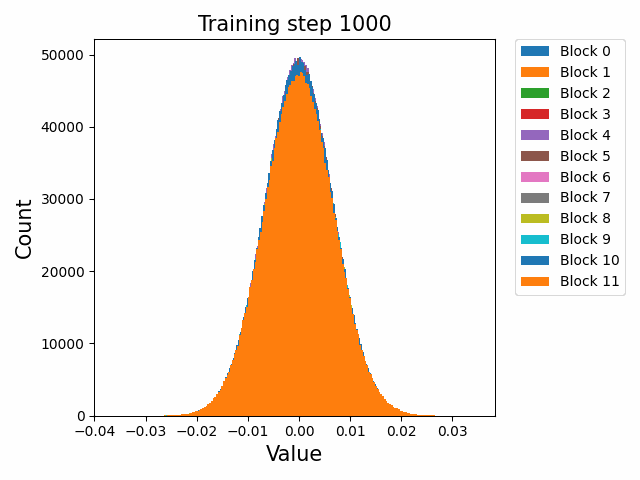
可以发现，各个 block 的 FFN 部分权重从随机初始化的高斯分布，开始时较为稳定；在 2000 step 左右开始剧烈变化；随后整体分布再次稳定下来。权重整体保留了高斯分布，但是存在一些不是非常大的 outlier。
接下来再看一下激活值的分布变化，在训练开始后，残差激活值迅速从高斯分布转变为逻辑分布（Logistic Distribution
{kind=link}
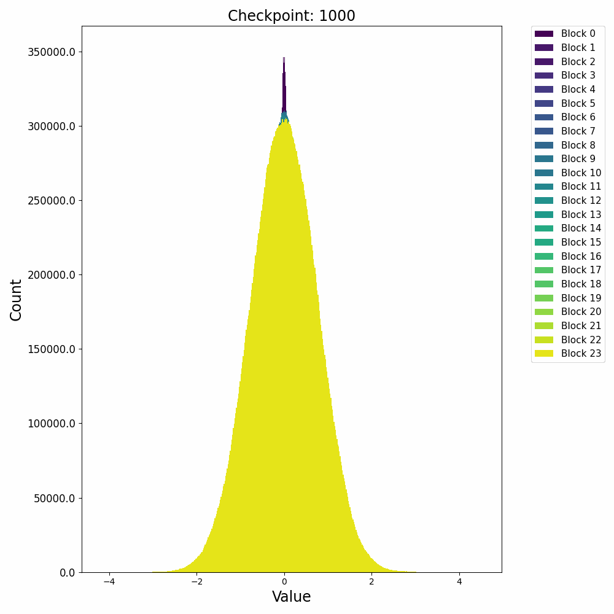
这种激活上的 outlier 会对模型量化过程产生极大的影响，因此诸如 AWQ 等量化方法会重点关注激活中的 outlier 情况，以保证模型推理时的精度。
梯度分布的变化趋势与权重类似，训练过程也未出现较大的 outlier，说明梯度本身也具备较好的稳定性，存在低精度计算和存储的可能性。
{kind=link}
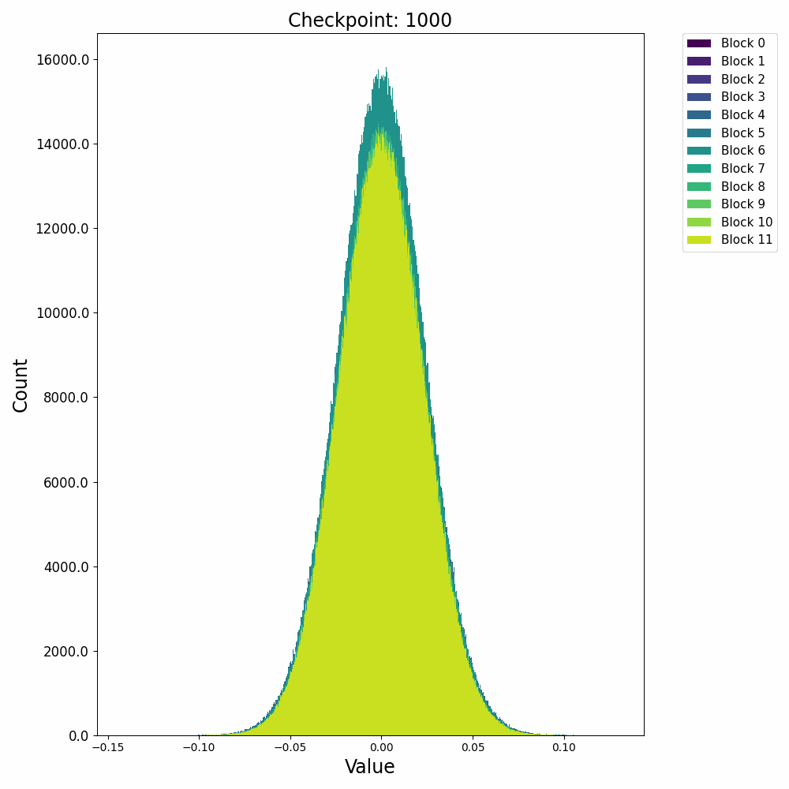
数值传播机理分析方法 ¶
此处我们主要分析 FFN 对数值动态性的影响，Attention 层本身只是对 token 进行加权平均，并不会本质性的改变数值分布。
矩阵乘法的动态性分析 ¶
给定矩阵乘法 \(C = A \times B \in \mathbb{R}^{m×n}\)，可将其元素分解为：
进一步有：
其中 \(\theta_{ij}\) 为两个向量的夹角，若两者均值为零，则 \(\cos{\theta_{ij}}\) 与两向量线性相关性 \(\rho\) 相等。根据上述分析，可以将矩阵乘法分解成两部分：
其中 \(a_i\) 表示的是每个 token 的能量，\(b_j\) 表示权重矩阵对每个特征通道的固有缩放。两者张成的能量矩阵 \(\mathbf{E}\) 表示了输入到矩阵乘法环节的总能量分布，而相关性矩阵 \(\mathbf{R}\) 则表示了能量传输效率与信息选择。在以前的文章中我们分了过向量相关性与浮点数量化误差的关系 )。
通常来说，能量矩阵 \(\mathbf{E}\) 具有较高的动态范围，而相关性矩阵 \(\mathbf{R}\) 需要较高的计算精度。
RMSNorm 的动态性分析 ¶
RMSNorm 层是当前主流大模型所使用归一化层，相较传统的 LayerNorm 减少了对均值的计算，进而是的归一化层的计算更加高效。RMSNorm 定义如下：
在大模型中，RMSNorm 先对每个 token 的表达进行归一化，再对每个 channel 进行缩放。
关键组件的动态性剖析 ¶
RMSNorm 的动态调节作用 ¶
我们首先以直方图的方式，直观观察下 RMSNorm 层中的数值动态性，实验使用 QWen2.5-1.5B Instruct 模型：
{kind=link}
三张图分别展示了 RMSNorm 层的归一化、缩放两个阶段，以及整体的数值变化。以左一为例，横轴表示输入的数值，纵轴表示归一化后的数值，图中的每个点表示归一化过程对一个数值的变换。比如某个点的座标为（200，20
通过上述三张图可以直观的看到归一化与缩放两个阶段对数值范围的影响。归一化能够较好的抑制 outlier，而缩放过程会放大某些重要的 channel，但也会导致部分数值变得很大，反而加剧了 outlier 的情况。这两个阶段整体作用还是对 outlier 起到抑制作用，但又避免重要信息不够突出。以下是随机选择的一些 RMSNorm 层对动态范围压缩的情况：
实验分析结论
- RMSNorm 主要作用是对 outlier 进行动态范围的压缩；
- 这种压缩作用大多数情况能成功，但部分 layer 只能提供很少的压缩比；
{kind=link}
点击展开更多实验图
{kind=link}
{kind=link}
{kind=link}
{kind=link}
可以发现，不同的 decoder layer 的 RMSNorm 层的表现会存在差异，开始的 decoder 与结束的 decoder 中 RMSNorm 的数值压缩作用并不明显，但中间的 decoder 中 RMSNorm 提供了非常强的动态范围压缩能力。
FFN 层的异常值发生与抑制机制 ¶
FFN 的主要计算如下：
其中三次线性变换 \(W_1\) 被称为 gate projection，\(W_2\) 被称为 up projection，而 \(W_3\) 被称为 down projection。我们分别分析这三次 projection 的能量矩阵与相关性矩阵：
{kind=link}
上图第一行展示了输入激活值与权重的直方分布，第二行分别是激活值、能量矩阵与相关性矩阵的直方分布，这里的能量矩阵与相关性矩阵分别对应前文给出的分析方法 \(C = \mathbf{E} \odot \mathbf{R}\)。
相关性矩阵对异常值的抑制作用 ¶
上图最后一行分别用散点图的方式展示了能量矩阵、相关性矩阵和激活输出矩阵三者之间的数值相关性。从左一图中可以看出相关性与能量之前没有相关性，左二图中可以看到能量矩阵对输出的激活值没有直接影响，右一图说明相关性对激活值大小存在线性影响。接下来我们随机抽取一些 decoder layer 的 ffn，观测其中矩阵乘法的 dynamics：
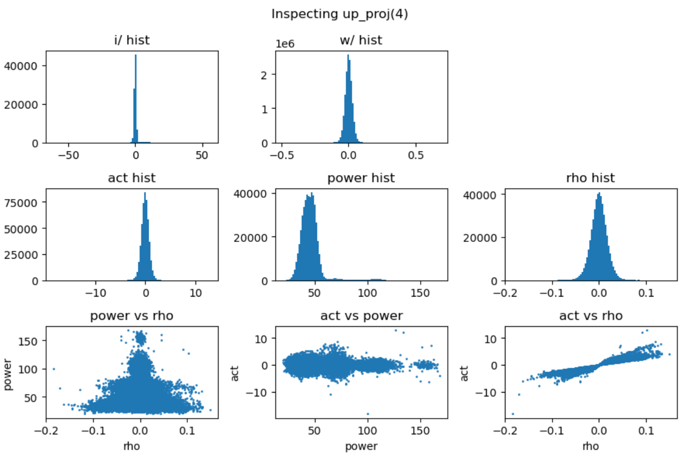 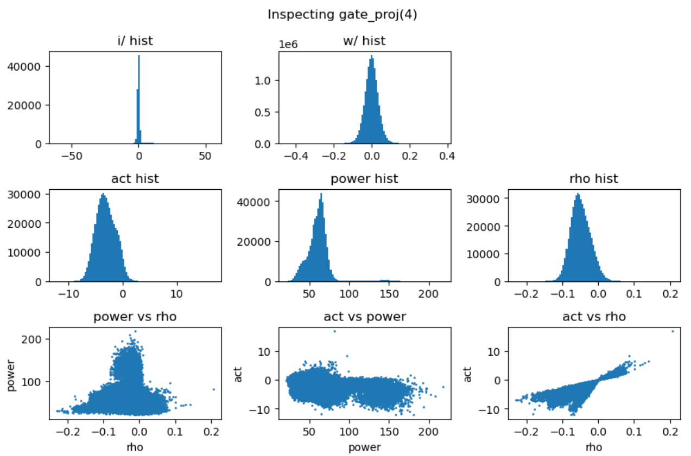 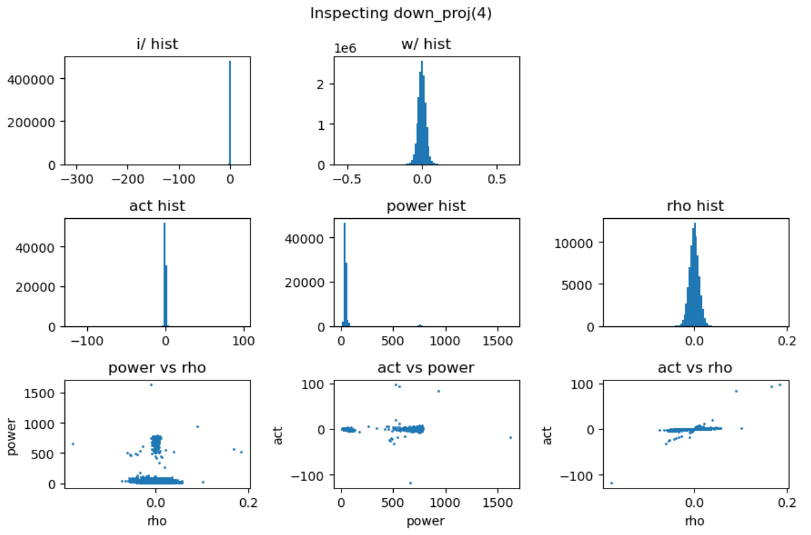
{kind=link}
{kind=link}
{kind=link}
点击展开更多实验图
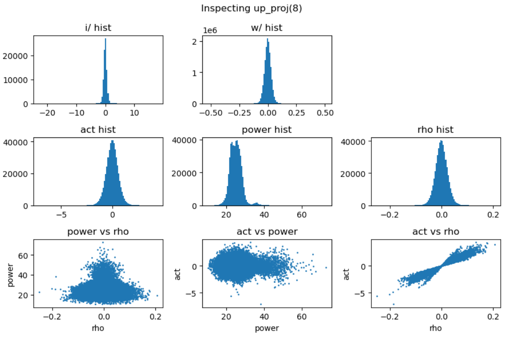 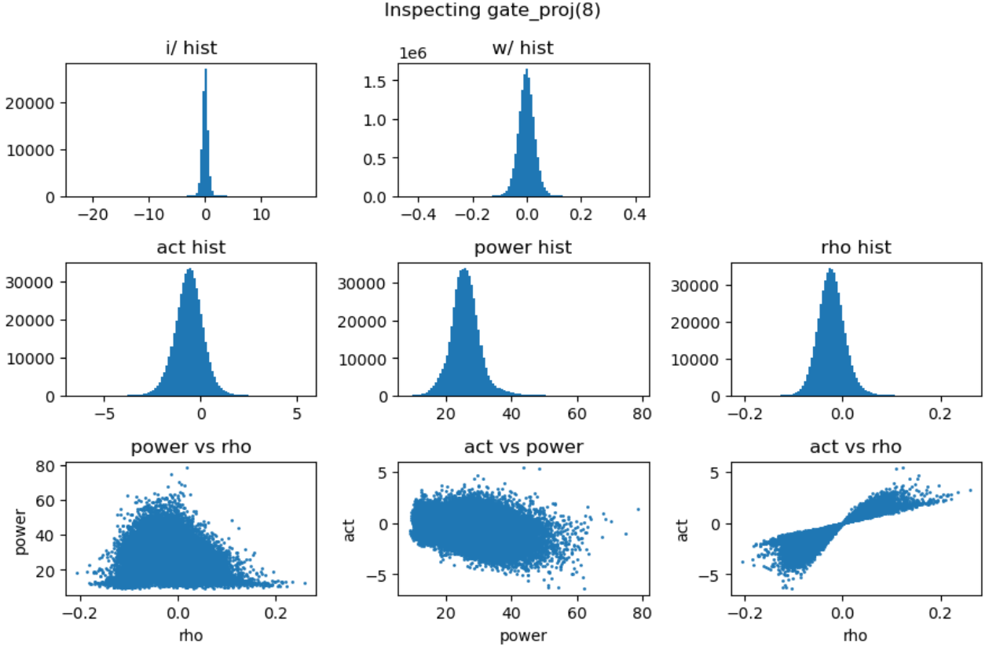 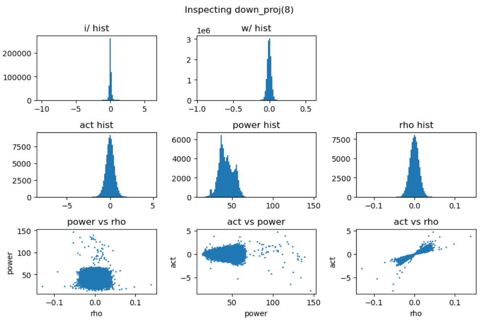 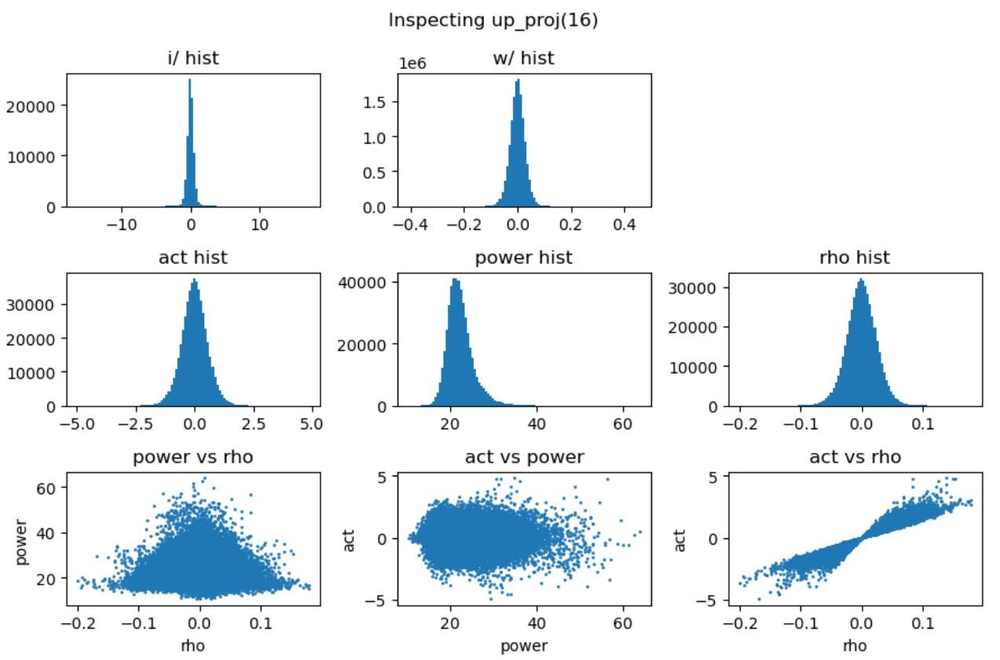 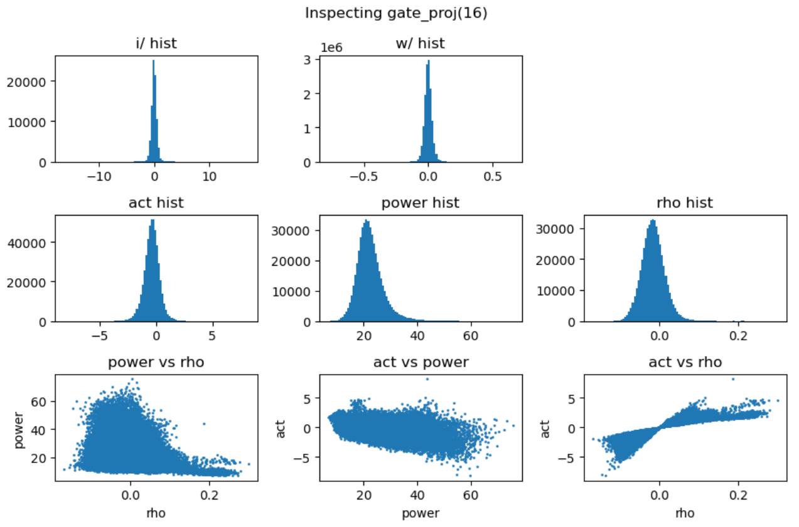 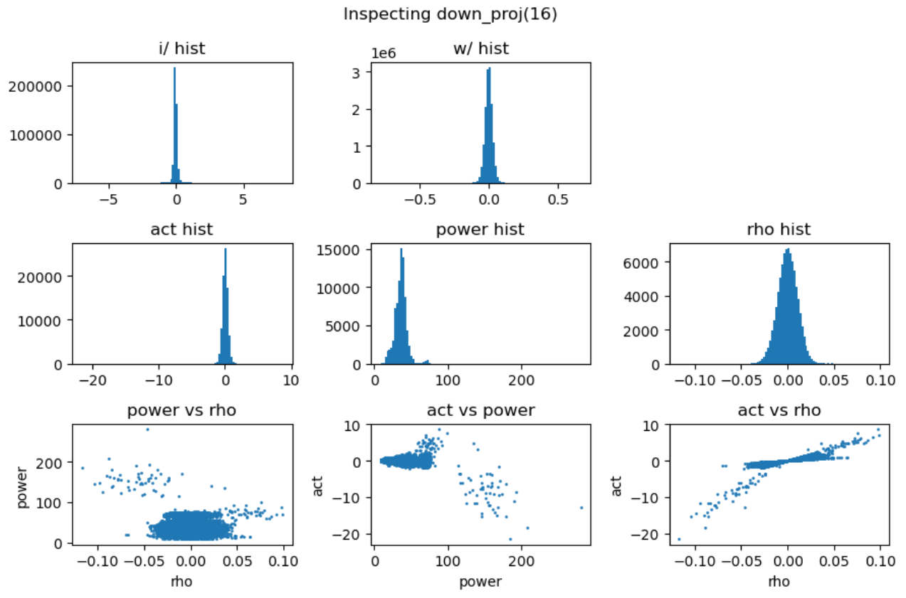 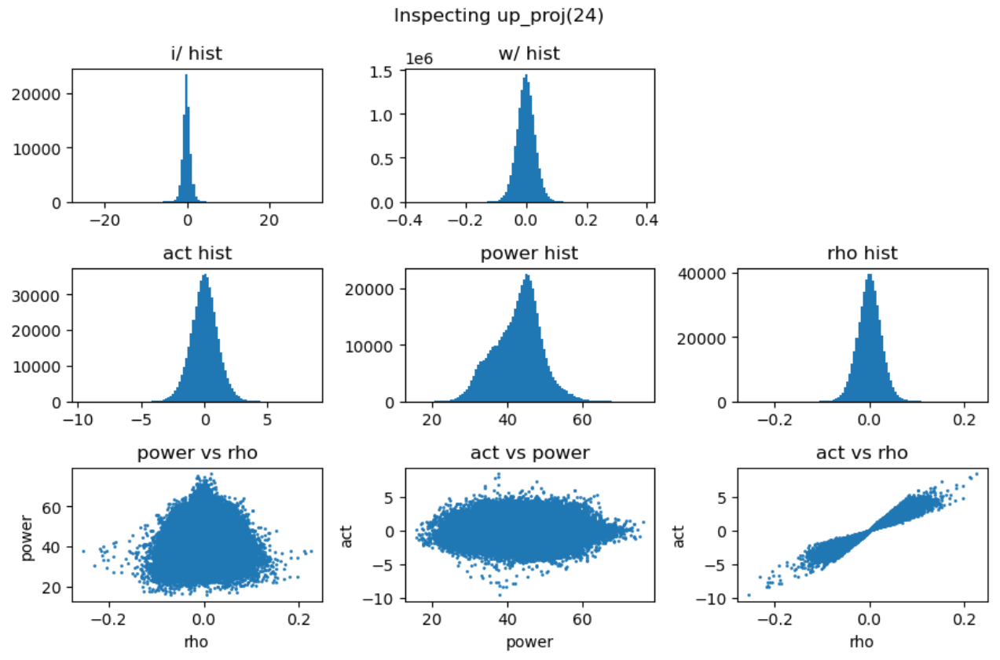 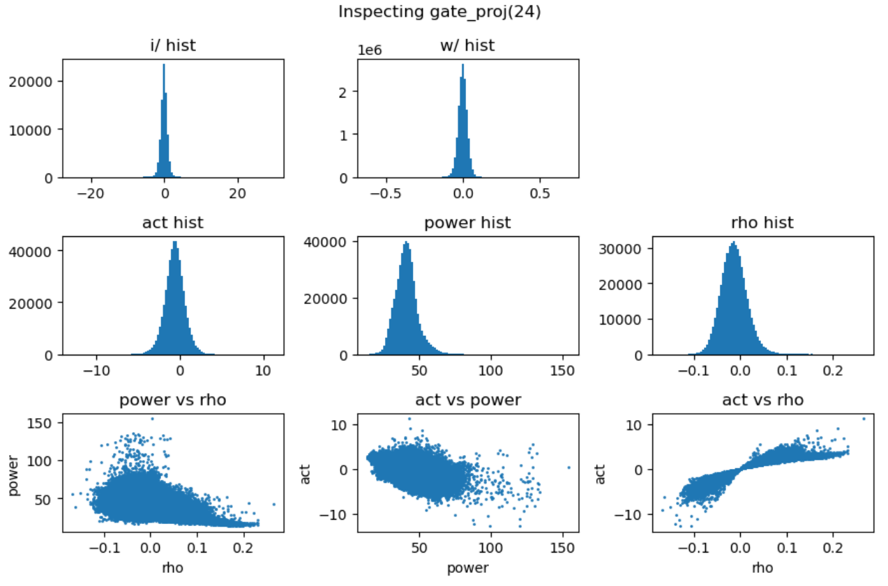 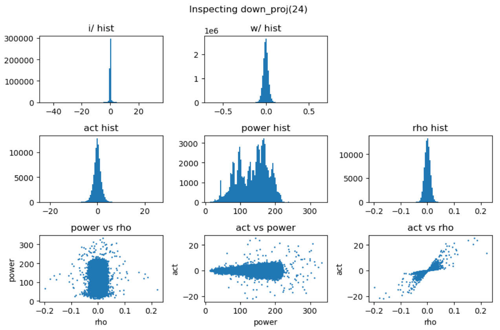
{kind=link}
{kind=link}
{kind=link}
{kind=link}
{kind=link}
{kind=link}
{kind=link}
{kind=link}
{kind=link}
通过对多层 FFN 的可视化分析，我们总结出以下关键发现：
- 权重矩阵分布基本服从正态分布且较为稳定，而激活输入则经常出现显著的异常值 (outlier)；
- 能量矩阵 (\(\mathbf{E}\)) 与输出激活值之间相关性较弱，对异常值的产生影响有限；
- 相关性矩阵 (\(\mathbf{R}\)) 与输出激活值呈明显的线性相关关系，是产生大幅异常值的主导因素；
SwiGLU 的异常值产生过程 ¶
实验中还发现 down projection 的输入激活值分布通常呈现高度尖锐特性，且频繁出现异常值。为了深入理解这一现象，我们对 SwiGLU 的完整计算过程进行了详细的可视化分析：
{kind=link}
上图中，第一行分别是输入激活、up projection 和 gate projection 的分布直方图。可以看到经过矩阵乘法后的 up projection 与 gate projection 的直方分布虽然也存在 outlier，但其数值范围仍然控制在 -50 到 +40，并不特别显著。但是两者相乘后得到的 down projection 输入（第二行中间图）中存在非常大的 outlier，数值在 -2000 到 +1000，并直接导致 down projection 的输出（第二行右一图）也存在非常巨大的 outlier。最后一行的中间图解释了这种巨大 outlier 产生的原因：up projection 与 gate projection 中的 outlier“撞”到了一起，相乘之后输出了非常大的数值。
另一方面，gate projection 的激活函数 swish 会对 gate prjection 的输出进行压缩（第二行左一图
此处我们对 SwiGLU 的异常值产生过程进行数学机理分析：SwiGLU 可看作一个门控选择放大单元，其计算可以分解为：
- 当 \(W_{\text{gate}}x > 0\) 时，\(\text{Swish}(z) \approx z\)（线性区）
- 当 \(W_{\text{gate}}x < 0\) 时，\(\text{Swish}(z) \rightarrow 0\)（饱和区）
这使得门控向量成为特征选择器，仅允许正相关特征通过。门控放大单元的机制也导致了以下作用：
- 异常值协同放大作用，当门控单元处于线性区时，\(\text{Swish}(z) = z\)，此时门控输出对 up projection 进行线性放大。当门控值与 up projection 都比较大时，会产生较大的异常值；
- 零值聚集效应，当门控单元处于饱和区时，\(\text{Swish}(z) \rightarrow 0\)，导致大量激活值被拉到零附近；
精度的协同设计之道：From Dynamics to Silicon¶
前文对 LLM 训练过程的数值特性进行了深入分析，我们主要讨论了 Training Dynamics，并尝试从数学与动力学角度讨论 Outlier 的产生与抑制机制。Outlier 是影响低精度训练与推理的最关键的因素：无法解决精度问题，再精妙的低精度设计，从芯片到算法，都全无意义。本节尝试讨论三个问题：何时可以使用低精度、如何高效使用低精度以及如何突破低精度的应用边界。
根据前文分析，RMSNorm 与 FFN 中的 Down Projection 会直接面临 SwiGLU 输出的高动态范围、高 outlier 激活值，因此有必要保留高精度计算。而 FFN 的 Gate Projection 与 Up Projection 所面临的动态范围相对可控，比较适合使用低精度进行计算。这两者可以使用前文所提到的 FP8 或者 INT8 矩阵乘法。为了进一步提高 LLM 训练推理的性能，可以考虑提高低精度运算所能覆盖的占比。
针对已识别的异常值产生机制，我们可从算法层面实施以下优化：
- 增强型归一化层：改良 RMSNorm，引入可学习的非线性压缩函数，提高对 outlier 的压缩比，可考虑形如 \(f(x) = \text{sign}(x) \cdot \min(|x|, \alpha)\) 的截断函数
- SwiGLU 门控机制优化：引入饱和区域来约束门控值的上限，如将 Swish 修改为 \(\text{Swish}_{\text{bounded}}(x) = x \cdot \sigma(x) \cdot \min(1, \beta/|x|)\)，有效抑制极端异常值的产生
- 尺度一致性调整：对激活值进行尺度变换（如开方操作 \(\text{sign}(x)|x|^{0.5}\)
） ，使门控向量与特征向量的量纲更加匹配，避免乘法运算导致的范围爆炸
硬件设计可充分利用我们发现的数值特性，实现更高效的计算：
- 稀疏计算加速：利用 SwiGLU 的零值聚集效应，当 Gate Projection 输出为负值较大时，Gating 值趋近零，可动态跳过相应的 Up Projection 计算；
- 层内动态精度：针对高动态范围的层，设计可动态切换精度的计算单元，例如激活高于某些值使用 BF16 计算，否则使用 INT8 计算；而高精度计算单元可以像 Intel 的 AVX-512 单元那样让多个计算核心共享；
- 异常值专用通道：为检测到的异常值建立专用的高精度计算路径，同时主计算路径保持低精度高效运算，通过稀疏矩阵格式存储异常值位置信息；
这种硬件与算法的协同设计能够在保持 FP32/BF16 级别计算精度的同时，获得接近 INT8 理论峰值的计算性能提升。
在这个 DeepSeek 大放异彩的今天，必须摒弃传统分层优化的孤立视角，建立从算法到芯片的端到端联合设计与优化，才能符合时代的发展。从算法到硬件的端到端精度协同优化不再是可选项，而是必然选择。通过深入理解 LLM 的数值特性，我们能够设计出更加高效、精确且可扩展的计算硬件。